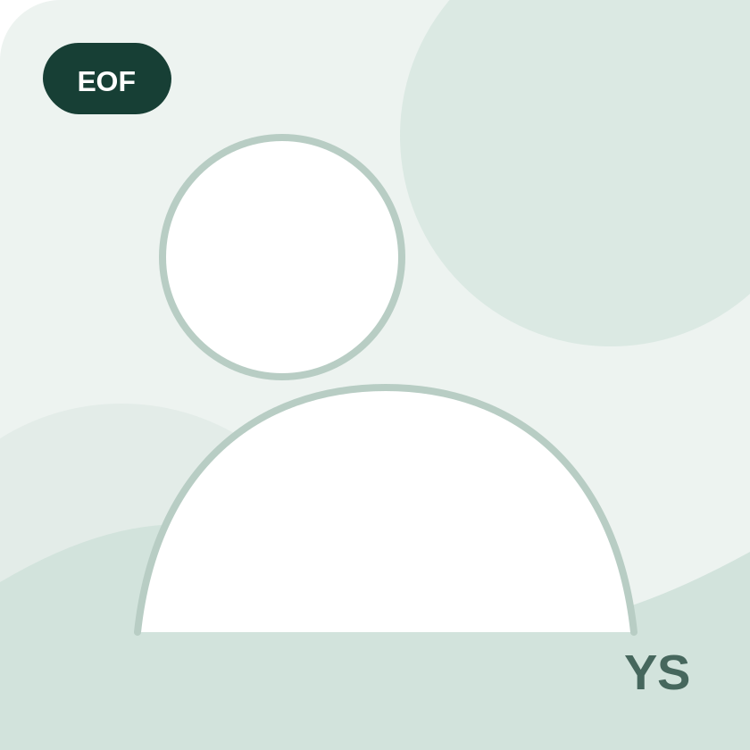
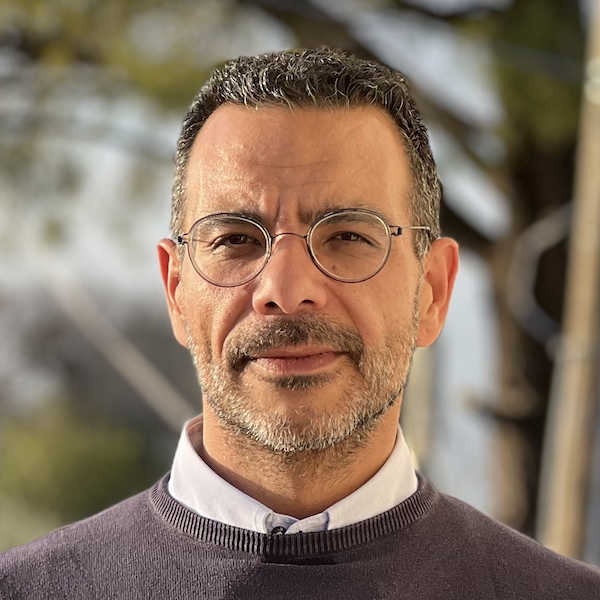
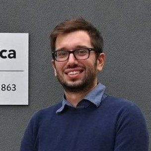
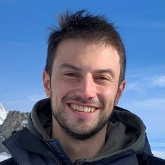
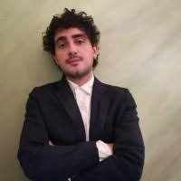
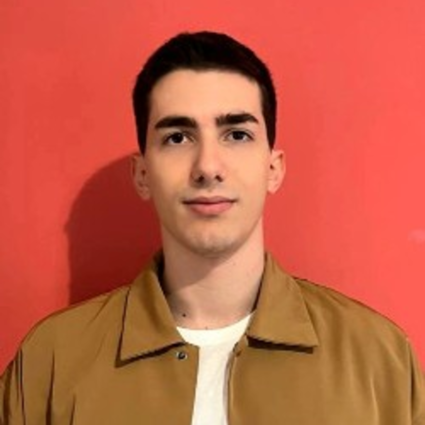
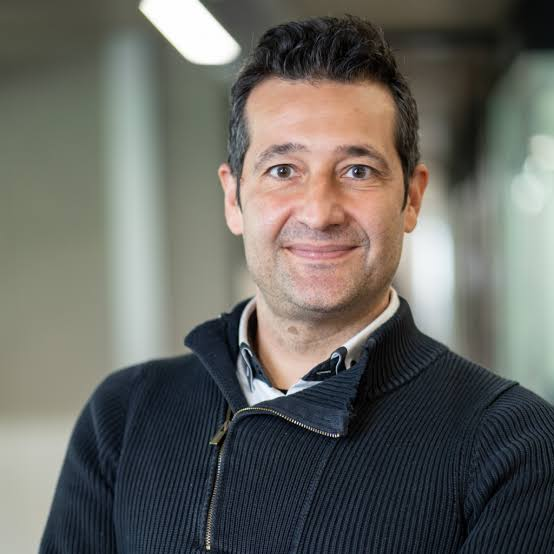

Efficient vision
Real-time, low-latency, compact and resource-aware vision models.
3rd edition · IEEE/CVF WACV 2027
Deployable Vision and AI for Smart Eyewear
A half-day workshop on deployable computer vision and AI for smart eyewear, spanning egocentric perception, gaze, embedded intelligence and wearable sensing.
Smart eyewear is an emerging real-world platform for computer vision, offering an always-available first-person view for accessibility, navigation and augmented reality. EOF brings together researchers and practitioners in computer vision, embedded AI, eye tracking and human-computer interaction, with smart glasses as the primary domain and related XR, wearable and mobile platforms explicitly welcome.
Workshop organized by the Smart Eyewear Lab (SEL), a joint research centre between EssilorLuxottica and Politecnico di Milano.
Timeline
Submission and camera-ready deadlines are at 11:59 PM in the timezone indicated below. Dates marked TBD are not yet finalized.
Contribute
We invite original, unpublished papers addressing one or more of the following topics.
Real-time, low-latency, compact and resource-aware vision models.
Action recognition, activity anticipation, scene understanding and 3D mapping.
Eye tracking, gaze estimation, near-eye sensing and gaze-aware interaction.
Sensor fusion, context-aware assistants and vision-language models for wearables.
Event-based, neuromorphic and low-power sensing and processing.
Privacy-preserving learning, on-device robustness, safety and fairness safeguards.
New datasets, standardized benchmarks and reproducible evaluation protocols.
Navigation assistance, accessibility tools, translation, memory recall and AR overlays.
Archival regular papers of 5–8 pages, excluding references, following the WACV workshop paper formatting guidelines.
Every submission will undergo double-blind peer review through OpenReview and receive at least three reviews.
All accepted papers will be presented through a short oral pitch and a poster at the in-person workshop.
All accepted regular papers will be published in the WACV 2027 Workshop Proceedings and submitted for inclusion in IEEE Xplore.
Half-day · single-track · in person
Invited talks span sensing, embedded intelligence, gaze, egocentric perception and context understanding, alongside short paper pitches and a dedicated poster and networking block.

Yusuke Sugano · The University of Tokyo
Gaze estimation and visual attention for smart eyewear
Oleg Komogortsev · Texas State University
Eye movements, biometrics, and privacy in wearable devices
Elisabetta Farella · Fondazione Bruno Kessler
Energy-efficient embedded AI for always-on wearable perception
Michael Goesele · Meta Reality Labs Research
Egocentric sensing and perception for smart eyewear

Giovanni Maria Farinella · University of Catania
Egocentric vision for context-aware smart eyewear
A smart eyewear device provided by EssilorLuxottica will be awarded to the best paper.
Organizing committee
The organizing committee combines academic and industrial expertise across computer vision, wearable AI, eye tracking, efficient machine learning and smart-eyewear systems. For questions about submissions, the program or workshop participation, contact the primary organizer below.

Politecnico di Milano
Efficient egocentric perception and deployable computer vision for smart eyewear.
marcobrando.paracchini@polimi.it
EssilorLuxottica Smart Eyewear Lab
Eye tracking, egocentric vision and resource-aware perception for wearable devices.

Politecnico di Milano
Efficient machine learning and embedded perception for wearable and human–computer interfaces.

EssilorLuxottica / Politecnico di Milano
Low-power localization, multimodal sensing and context-aware interaction for smart eyewear.

ETH Zurich
Edge AI, wearable sensing, TinyML and ultra-low-power embedded systems.
EssilorLuxottica Smart Eyewear Lab
Eye tracking, gaze sensing, computer vision and context-aware smart-eyewear technologies.
Workshop series
The current workshop and previous editions share one coherent site. Archive pages preserve their programs, speakers, awards, accepted papers and photo collections.
The first edition at ECCV 2024 received 16 submissions, accepted 12 papers and attracted more than 70 attendees.
Explore archiveThe second edition at IJCNN 2025 received 9 submissions, accepted 7 papers and attracted approximately 40 attendees.
Explore archiveThe current edition focuses on deployable vision and AI for smart eyewear at WACV 2027.
Current edition